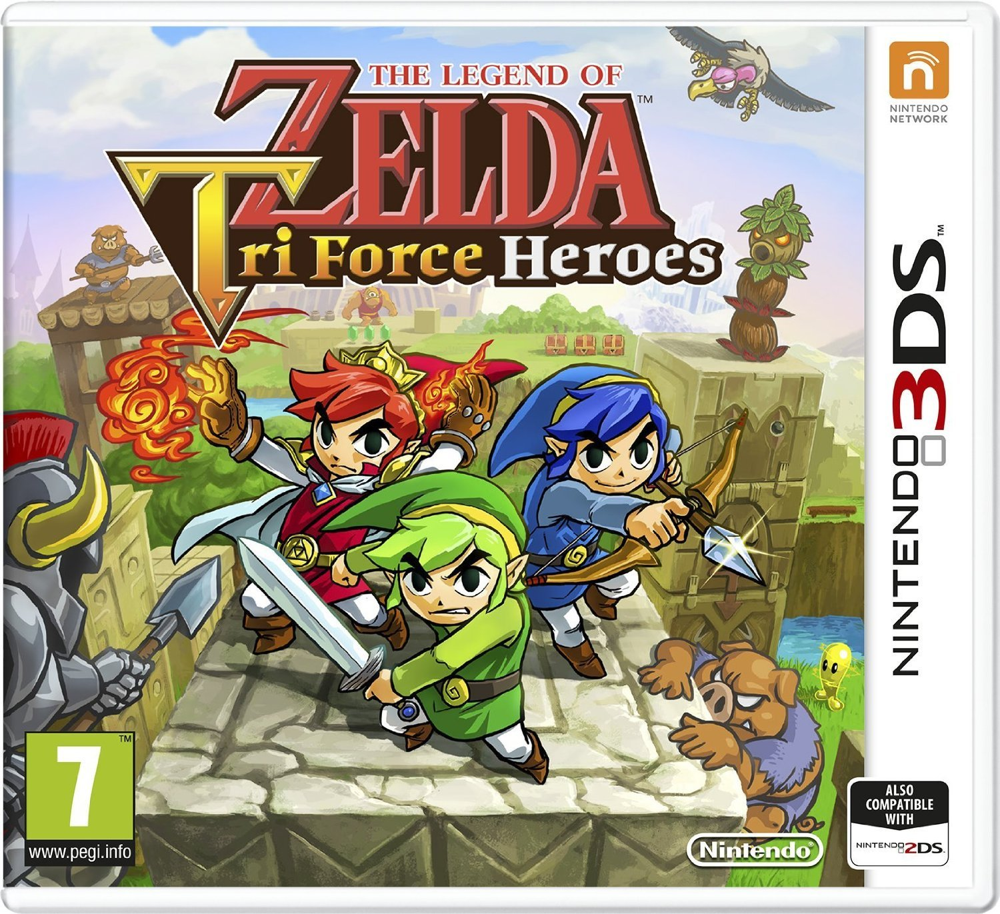

Tri Force Heroes setzt auf kooperative Dreier-Mechaniken und Mode-Elemente; kurze, puzzleorientierte Level und Teamplay stehen im Fokus. Die Umsetzung erhielt gemischte Kritiken, bietet aber klare Multiplayer-Intentionen.
| Titel | The Legend of Zelda: Tri Force Heroes |
| Veröffentlichung | 2015 (regional) |
| Plattform | Nintendo 3DS |
| Entwickler | Nintendo EPD, Grezzo |
| Produzent | Nintendo |
| Komponist | Various |
Ein Dreier-Koop-Design: Level sind explizit für Teamarbeit entworfen (z. B. Stapeln von Links, Teilen von Gegenständen), mit einem Mode-/Kostüm-System als Gameplay-Mechanik zur Modifikation von Fähigkeiten. Einzelspieler-Optionen existieren, sind aber reduziert; der Kern liegt auf Kommunikation, Rollenverteilung und kurzen, Puzzle-orientierten Missionen. Herausforderung und Balance sind auf Mehrspielersessions ausgerichtet.